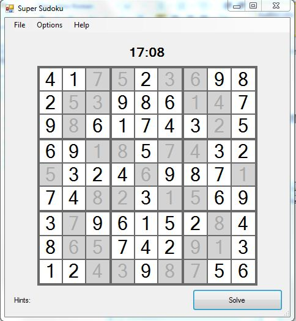

Abin Muckom
Jessica Gentry
Michael W
By now you have already generated and started a game! Having trouble? Questions? Feel free to follow this guide through and hopefully it’ll answer your questions and help your Sudoku game playing!
Depending on the difficulty you chose some of the blank squares will be filled in with “uneditable values” (These squares typically tend to be grayed out and cannot be altered.)
Using the numbers 1 – 9, the 81 cell Sudoku grid must be filled in so that every cell contains a numbers 1 – 9. The trick being, no number can repeat within any column, row or block .The game that we’ve designed should tell you when you have the same number in the corresponding column, row or block by changing the number color to red like the image below. In the image below the number “2” same row twice which can’t happen in order to solve the puzzle.
The easiest way to play is determine which number has the highest frequency within the puzzle. In the picture below we notice that the number “8” has the highest frequency.
Next we want to enter the number “8” wherever they can possibly go. We know that no number can repeat in any block. Therefore, we can put “8’s” in the block 2, 3, 5, 7. In the picture below we notice that already some of the ‘8’s” are in the wrong place or occur twice because they are red. However, the “8’s” highlighted below can only be placed in one square in blocks 6 & 7. Therefore, we can now place an 8 in both of those squares.
Now that we’ve taken care of some of the “8’s” we need to identify another number that has a high occurrence. We are able to notice that the number “5” occurs five times in this puzzle. We’ll do the same procedure for the “5’s”. Essentially it’s a process of eliminating to fill in the blanks. (Note: We left the old “8’s” in there for now to see if they actually work there after doing another number.)
We have only a single cell in block 3 & 5 where a “5” can possibly be placed. Therefore, let’s go ahead and place these “5’s” where they belong.
After deciding to place the “5’s” in blocks 3 & 5 we realize that the “5’s” we previously placed in blocks 8 & 9 are no longer possibilities because then would be in the same row as the “5’s” we just placed. Now by process of elimination we are able to rule those out. In the below image we notice that after removing those “5’s” there is only one possible placement for “5’s” in blocks 8 9. After filling those two places in we are now done with “5’s” on the puzzle. One out of nine numbers done!
You should have a good understanding of the game by now. Using this strategy you should be able to complete the puzzle in no time. Good luck! Your complete puzzle should look like the image below. How fast were you? Try again and beat your time!
